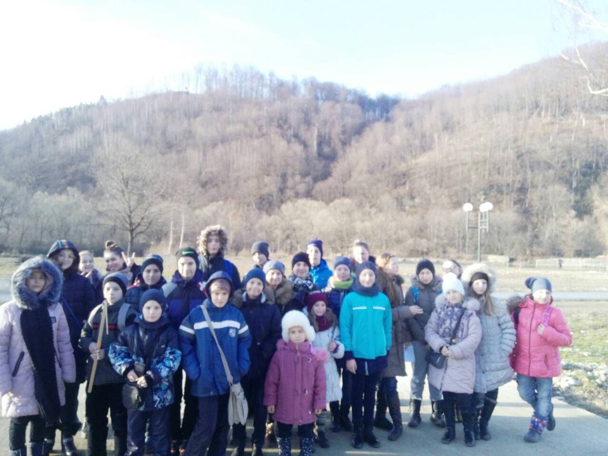
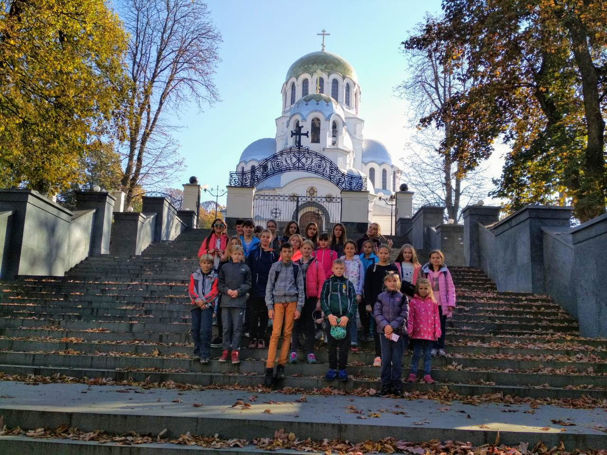
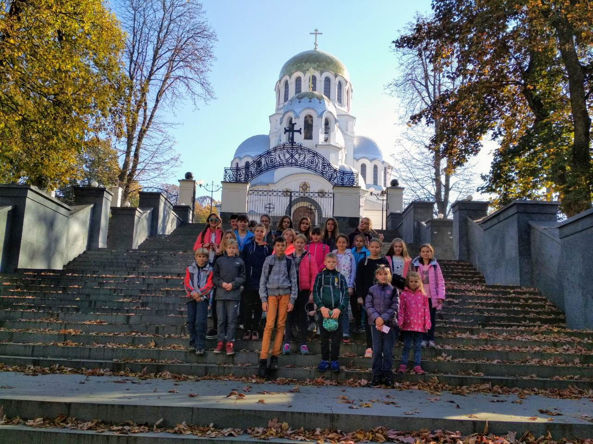

МОї ПОДОРОЖІ
Ужгород
Моєю першою самостійною подорожжю стала поїздка до Ужгорода. Зібралась група і ми рушили в дорогу. Ми відвідали багато визначних пам'яток міста. Також підіймалися на гору, їздили на підйомнику і пили воду з джерела.

Ладинка
Наступного разу ми вже йшли з палатками до Ладинки. Там ми жили в польових умовах життя, готували їсти на вогнищі та плавали на байдарках.

Ніжин
Ніжин я відвідувала дуже багато разів. Кожен рік ми їздимо туди на змагання з орієнтування, тому Ніжин я знаю як своїх п'ять пальців.
Івано-Франківськ
В Івано-Франківську я отримала багато позитивних емоцій. Ми побували на скелях Довбуша, відвідали багато музеїв та історичних пам'яток. А також були на тренінгах і ознайомилися з культурою і традиціями західної України.

Блакитні озера
На блакитних озерах я познайомилася з новими людьми та отримала чудовий досвід життя в польових умовах.
.jpg)
.jpg)
.jpg)
Буки
В селищі Буки, я відвідала Буцький каньйон який мене дуже вразив


Кам'янець-Подільський
Кам'янець-Подільський - місто яке залишило слід в моєму серці назавжди. Кам'янець-Подільський - це безліч пам'яток історії та мистецтва, це добрі люди і кохання з першого погляду.


 


Одеса
В Одесі було дуже весело і цікаво. Я відвідала катакомби і Білгород-Дністровськ, побувала в одеському дворику і в морському порті.